Executive summary
LendX Finance is a fictional multi-segment lender — five loan types, 20 branches, 4,000 loans and a ₹7.11bn loan book. I designed a PostgreSQL star schema, ran seven sections of SQL analysis, then built a Power BI dashboard on defaults, customer quality and branch performance.
Headline: 9.2% of repayment installments are in default, and 22.0% of loans (881 of 4,000) have at least one defaulted installment. The two ways of counting risk point at different segments. By count, Personal Loans (38% of defaulted installments) and BNPL (20.5% default rate) look worst. By rupees, the exposure sits in Home Loans (52%) and Business Loans (31%) of the ₹1.32bn lent on loans that have a default.
Business problem
Business question: Where does risk actually sit in this loan book, and is the business earning enough to cover it?
| Question investigated | Why it matters |
|---|---|
| Which loan types and credit bands default most? | Directly erodes profitability and should drive underwriting rules |
| Is repayment delay predictable before a customer defaults? | An early-warning signal could change collections timing |
| Which regions and branches combine volume with controlled risk? | Guides where to expand lending |
| Is there an under-used, genuinely low-risk customer segment? | A growth lever that doesn't add risk |
Dataset
| Table | Records | Notes |
|---|---|---|
| loans | 4,000 | Disbursed 2019–2024 across five loan types and 20 branches |
| customers | 1,000 | 981 of them hold at least one loan; credit scores run from 300 to 886 |
| repayments | 10,760 | 1–6 installments per loan (2.7 on average): 76.3% on time, 14.5% late, 9.2% default |
| branches | 20 | Four regions |
| loan types | 5 | Personal, Home, Auto, Business and BNPL |
Dataset note: LendX is a fictional lender with synthetic data built for portfolio analysis; record counts and percentages were recomputed directly from the repository's CSV files.
Data preparation
The repository's PostgreSQL schema (Table create cript.sql) enforces data integrity at the structural level rather than through a separate cleaning stage: every table has explicit primary/foreign-key constraints, and CHECK constraints restrict columns such as region (North/South/East/West) and risk_level (Low/Medium/High) to valid values before any row can be loaded.
The five CSVs load directly into this validated structure — loans and repayments as facts, customers, branches and loan_types as dimensions — which is what the SQL analysis and Power BI model both sit on top of.
Data issue found: in the branch table, branch names do not line up with their listed city and state from BR002 onward (for example “Chennai Anna Nagar” is listed in Kochi, Kerala). Branch results are therefore read by branch ID and listed city, and branch-name findings are treated with caution.
Data model & SQL architecture
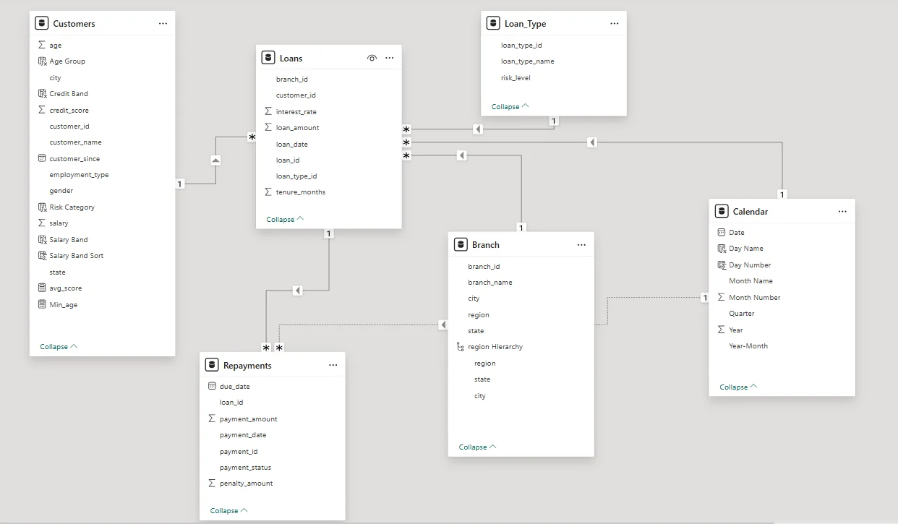
| Section | What it answers |
|---|---|
| 1 · KPI framework | Portfolio value, default rate, NPA %, delinquency, yield, collection efficiency, average credit score |
| 2 · Portfolio overview | Size of the loan book, dominant loan types, top regions |
| 3 · Growth & distribution | Monthly disbursement, branch volumes, tenure distribution, high-lending cities |
| 4 · Customer quality | Income vs loan size, credit-score spread, employment type, new vs old customer risk |
| 5 · Risk & default | Default by loan type, region, loan size and credit score |
| 6 · Profitability & efficiency | Revenue by product and region, profit vs risk, late-payment rate |
| 7 · Advanced analytics | DENSE_RANK, AVG() OVER, running totals, LAG() early-warning signal, ROW_NUMBER per region |
SELECT lt.loan_type_name,
round(AVG(r.default_flag)*100,2) || ' % ' AS default_rate
FROM repayments r
JOIN loans l ON r.loan_id = l.loan_id
JOIN loan_types lt ON l.loan_type_id = lt.loan_type_id
GROUP BY lt.loan_type_name
ORDER BY AVG(r.default_flag) DESC;SELECT
loan_id,
due_date,
delay_days,
LAG(delay_days) OVER (PARTITION BY loan_id ORDER BY due_date) AS prev_delay,
delay_days - LAG(delay_days) OVER (PARTITION BY loan_id ORDER BY due_date) AS delay_change
FROM repayments;How “default rate” is measured: the SQL averages default_flag over repayment rows, so it is the share of installments in default — not the share of loans. The loan-level view (22.0% of loans with at least one defaulted installment) comes from a separate recomputation on the CSV files.
Analytical approach
- Schema design (DDL + constraints)
- Load 5 CSVs
- SQL analysis (7 sections)
- Power BI star-schema model
- DAX measures
- 7-page dashboard
- Written insights
Key findings
Business recommendations
Reduce risk
- Judge BNPL by exposure as well as rate: it is 0.44% of the book, so tightening it improves the headline rate (9.21% → 8.43% if removed) but barely moves rupee risk.
- Use risk-based limits instead of a hard credit-score cut-off. A ≥650 rule would remove 89% of loans (and 90% of collections) to cut the default rate only from 9.2% to 6.3%. A floor at 450 keeps 69% of loans and removes 38% of defaulted installments (rate 8.2%) — but also about a third of collections, so cap or price sub-450 borrowers rather than reject them outright.
- Start the LAG()-based delay early-warning on Home and Business loans: they hold 84% of the rupees at risk.
Grow safely
- Keep leaning on Home Loans — ₹4.47bn at a 4.9% installment default rate.
- Treat the 700+ segment as promising but unproven (7.5% default vs 6.3% at 600–699); pilot it before expanding.
- Aim collections effort at Personal Loans — 38% of defaulted installments on a small rupee book — with reminders and auto-debit rather than heavy recovery action.
Dashboard showcase
A navigable report with a home page, seven analysis pages and two drill-through detail views. Click any screenshot to enlarge.
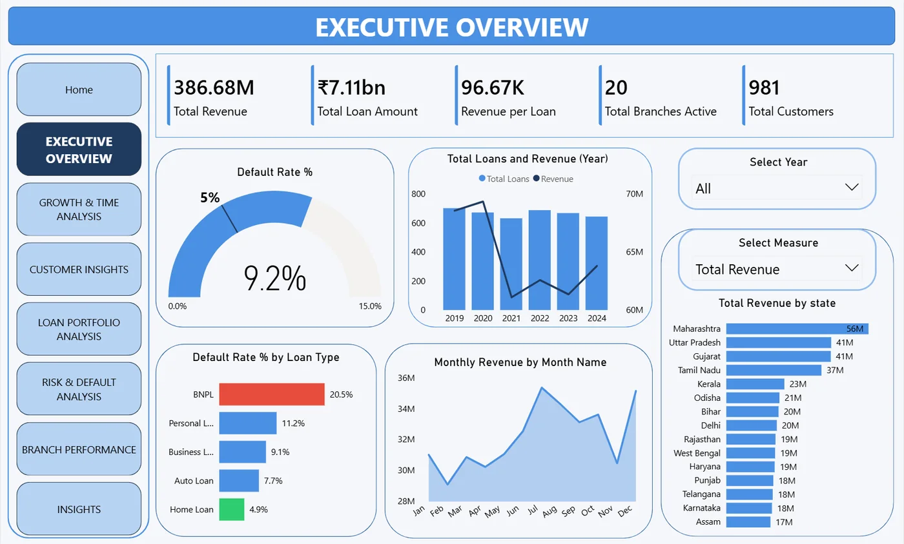
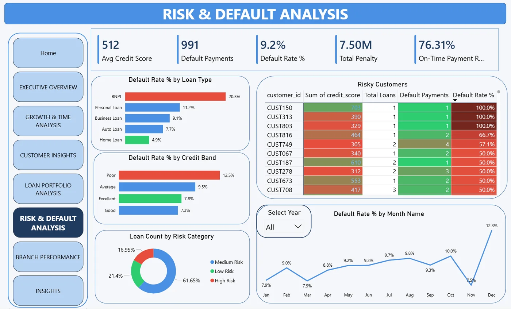
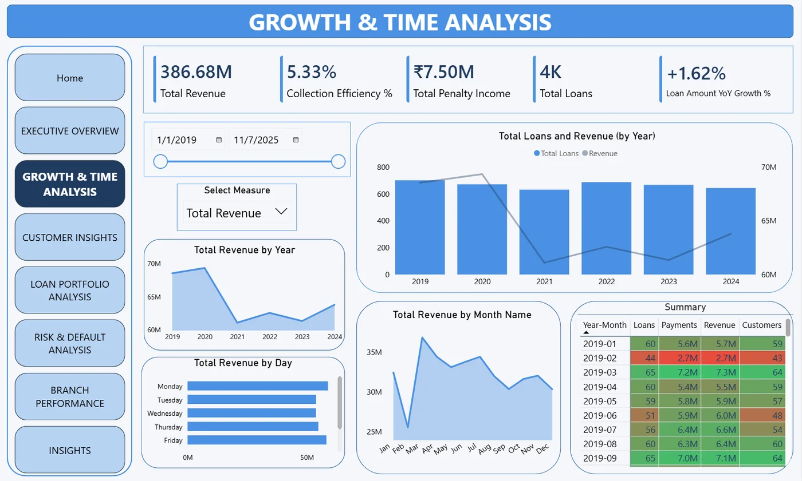
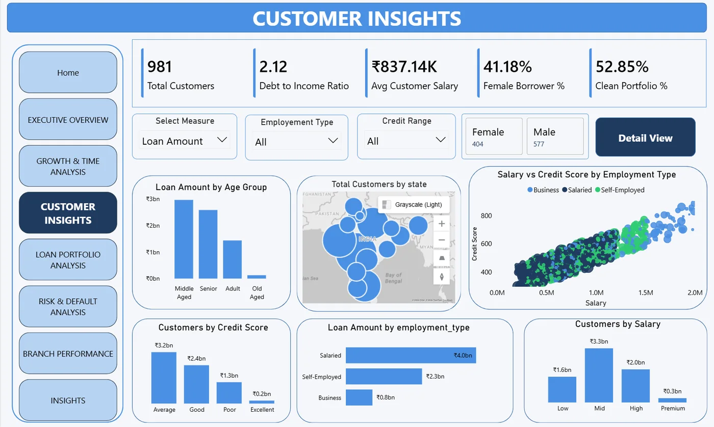
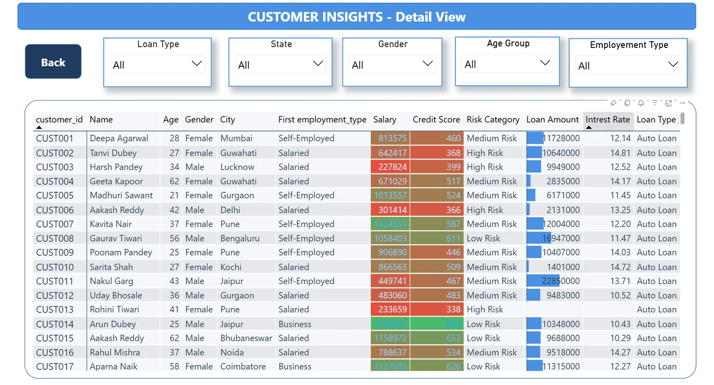
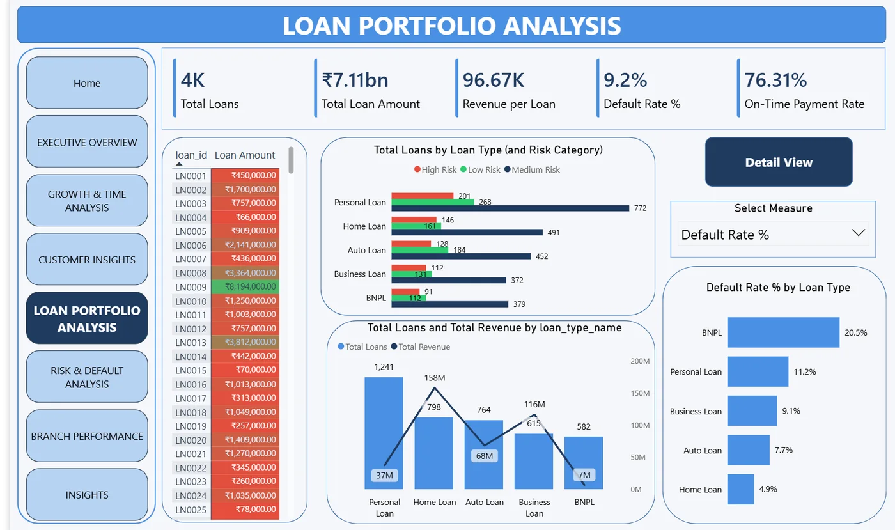
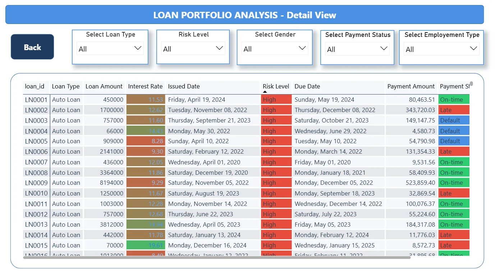
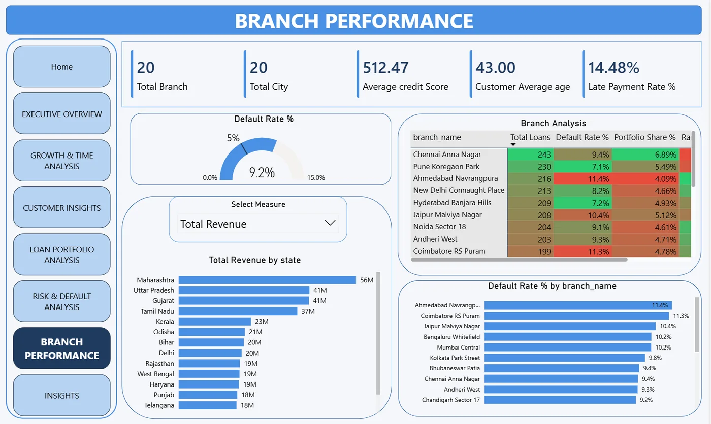
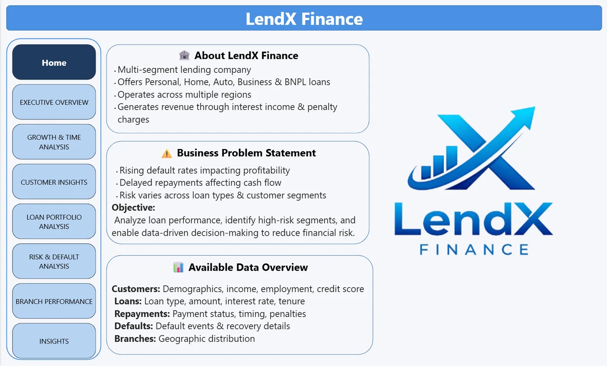
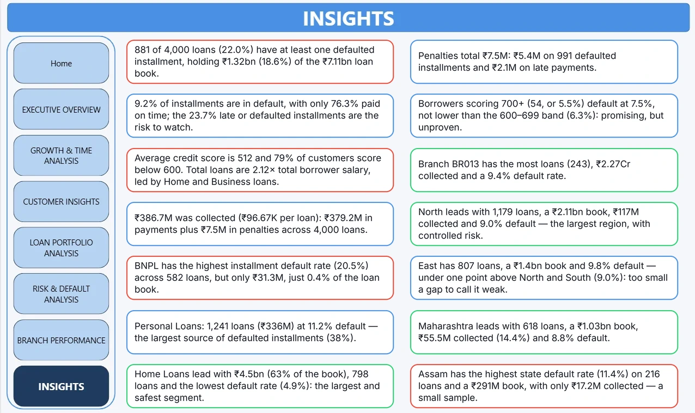
Technical implementation
| Tool | Used for |
|---|---|
| PostgreSQL | Database design, DDL and all SQL analytics |
| Power BI Desktop | Data modelling and interactive dashboards |
| DAX | Measures such as Default Rate %, Total Revenue, On-Time Payment %, Total Loan Book |
| Power Query (M) | Data transformation and cleaning |
Limitations & assumptions
Worth keeping in mind
- The dataset is synthetic; the figures demonstrate method, not a real lender's performance.
- Default metrics are installment-level. The repayments table holds only 1–6 installments per loan, so there is no loan-lifetime default curve.
- The dashboard's “Total Revenue” (₹386.68M) is cash collected — payments of ₹379.18M plus penalties of ₹7.50M. It includes principal repayment, so it is neither interest income nor profit. No credit-loss accounting was built, so this project does not claim a net profit or loss.
- Branch names in the source file do not match their listed cities (see Data preparation), so branch-name findings are unreliable.
- Associations are not causation, and the credit-score what-ifs are static: they assume borrowers' behaviour would not change.
Explore the code
The repository contains the full PostgreSQL schema, all seven SQL analysis sections, the Power BI file and every dashboard page as an image.